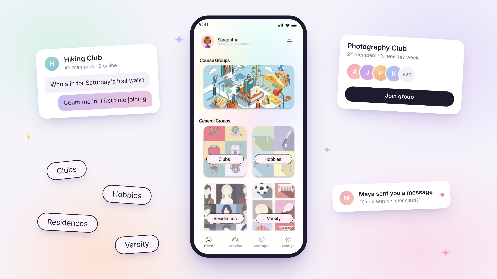
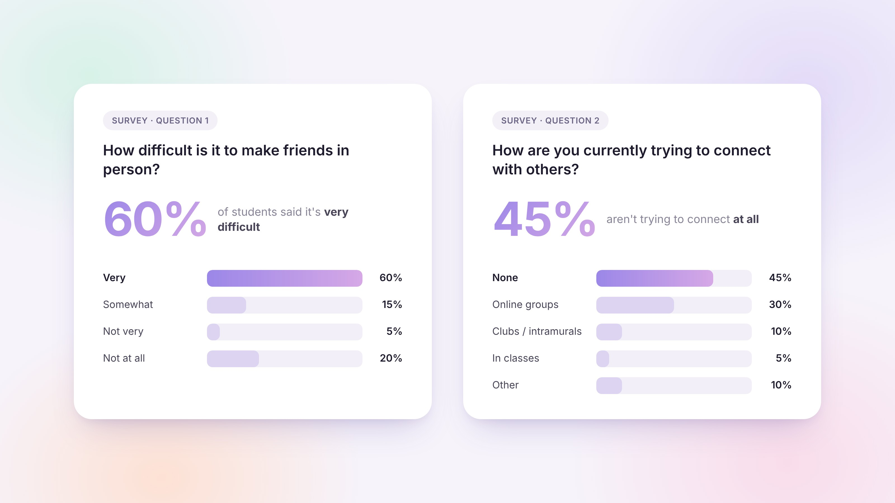
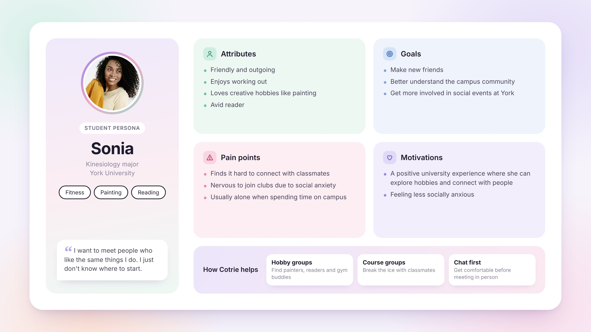
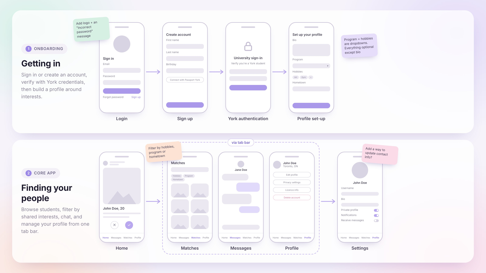
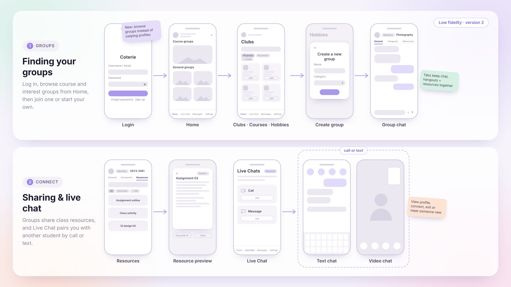
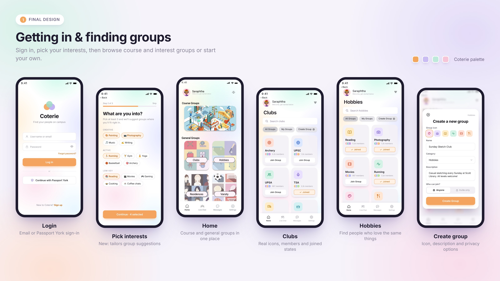
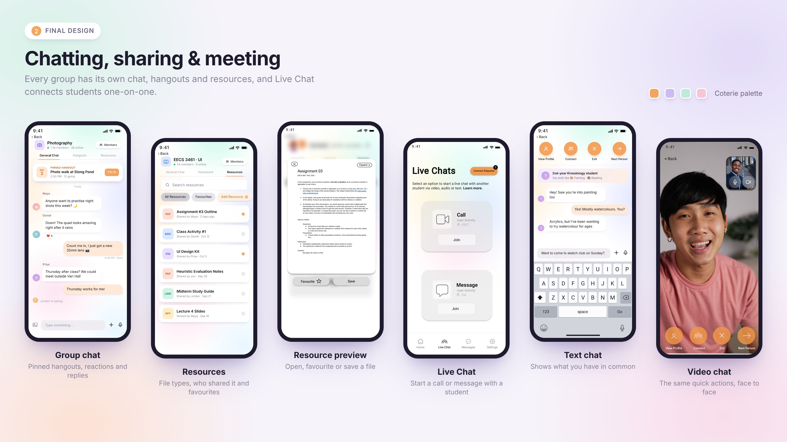
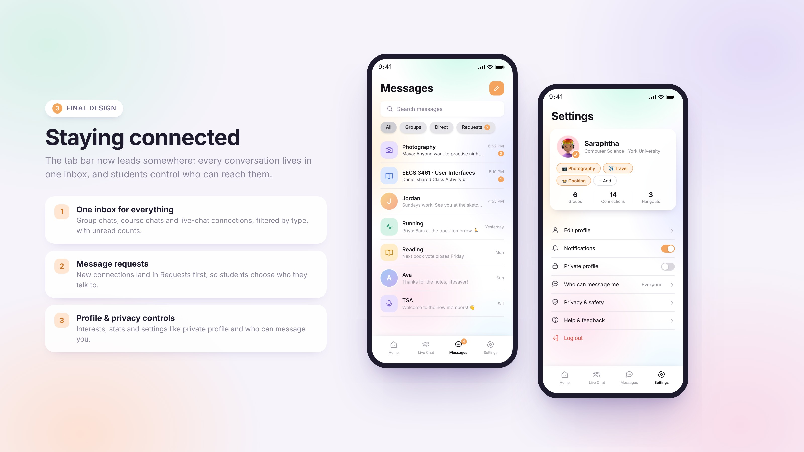

ux case study · 2023
Coterie
An app concept that helps university students make friends through interest-based group spaces, designed for students finding their footing again after the return to in-person learning.
- My role
- UX/UI designer (solo project)
- Tools
- Figma, user surveys
- Timeline
- 3 weeks

The challenge
After two years of mostly online classes, many students felt anxious about returning to campus. Most of their recent social contact had been with family, and stepping back into a crowded university felt overwhelming.
At my university, making friends was already hard before the pandemic, because so many students commute and leave campus right after class. The pandemic made that gap wider. So I set out to answer two questions:
- What barriers are students facing in their transition back to in-person learning?
- How is this affecting their social wellness?
Research
I started by brainstorming what might be behind students' poor social wellness: what connects students to each other, what commuter culture is missing, and what it takes to build a community. Then I surveyed students to find out how they were really feeling.

I want to join clubs and meet people with the same interests, but meetings feel intimidating when I don't know anyone.
What I learned
The surveys confirmed that students were struggling to reconnect after months of minimal social contact, and that commuting made it even harder. I turned the findings into a user profile capturing students' attributes, pain points, motivations and goals.
Their core needs came down to three things: an online space to meet new people, a way to share their hobbies, and an easy way to find people like them.

Designing Coterie
Based on the survey data, I built a user flow and a low-fidelity prototype. My first idea was a matching system: students would like each other's profiles, and a mutual like would unlock a chat.

When I evaluated it, I realised it had a big problem. Matching encouraged students to judge each other on a profile alone, which was the opposite of the judgment-free space I wanted to create. So I redesigned the flow around group spaces instead, where students can join conversations comfortably without being "picked."

The design
The final design organises Coterie into categories of groups that anyone can join freely. Students can connect with classmates in their courses, explore hobbies they love, and discover new communities, all without the pressure of a one-on-one match.



Reflection
Coterie was my first time doing user interviews, and it changed how I think about design. Hearing students describe, in their own words, how lonely and intimidating campus felt made the problem real in a way no brainstorm could. It taught me to listen first and let what people actually say shape the solution, rather than starting with an idea and looking for proof.
The biggest lesson came from letting go of my first concept. The matching system seemed like an obvious way to connect people, but it worked against the very thing students needed: a space where they wouldn't feel judged. Seeing that taught me that a feature can be clever and still be wrong for the people using it.
It was also the first time I got to design something that could genuinely be useful to people, and that's what has stayed with me most. If I took Coterie further, my next step would be usability testing with students to see how comfortable the group spaces really feel, and what would make someone take that first step to join.